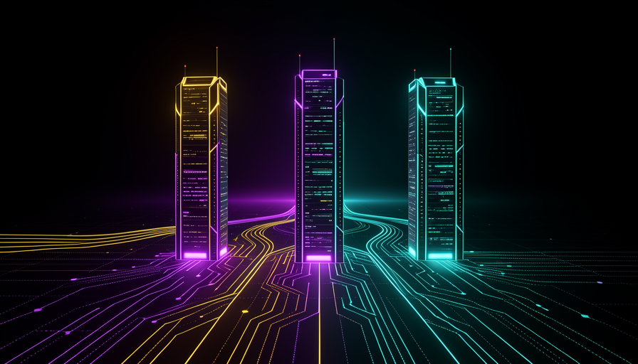

🟧 Los actores
Lo que da peso a la alerta no es una persona haciendo ruido: son tres grupos serios e independientes que miran al mismo horizonte. El diagrama superior muestra a Anthropic, DeepMind y OpenAI convergiendo en el mismo tema. Sin embargo, converger en el tema no significa coincidir en los plazos: cada uno tiene una opinión distinta sobre cuándo y cuánto.
Anthropic · Jack Clark
Sitúa ~60 % de probabilidad hasta 2028. Es una conjetura de UNA persona que asigna una probabilidad a una idea; no es un consenso.
DeepMind · Hassabis
Hoy es «soft»: la IA acelera el trabajo de los ingenieros. Aún no es «dura» (el modelo entra en el centro de datos y vuelve superinteligente).
OpenAI · plan
Un documento de la empresa reconoce que ve «señales iniciales» de auto-mejora. Es cauteloso, pero apunta en la misma dirección.
🎯 Convergencia en el tema ≠ consenso sobre los plazos
Que tres actores rivales apunten en la misma dirección es una señal fuerte de que el tema es real. Pero las fechas y porcentajes siguen siendo apuestas, no hechos. La convergencia invita a tomar el tema en serio; el desacuerdo sobre los plazos impide dar por segura cualquier fecha.
📊 Recordatorio de la Trilha 1
La auto-mejora «suave» × «dura» ya apareció en Fundamentos: suave significa que la IA acelera el trabajo humano (algo que ya ocurre); dura significa que la IA se mejora sola, sin intervención humana. En el fondo, el debate de 2028 trata de cuándo (o si) lo suave se vuelve duro.
🟣 Mirendil
Si la RSI fuera solo una conversación entre investigadores, no se convertiría en una tesis de inversión. Mirendil —una startup fundada por antiguos empleados de Anthropic y Google— recauda 200 millones de USD (a16z, Kleiner, Nvidia, según el video; por verificar) con una misión clara: crear «IA que hace el trabajo de un ingeniero de IA». En una frase: IA para IA y para la ciencia.
La apuesta, en una línea por punto
Recreación ilustrativa del pitch: cifras y detalles del video, por verificar en la fuente primaria.
⚠️ La tensión oculta
Para acelerar el bucle (IA que mejora IA), habría que usar los mejores modelos para construir el siguiente. Pero las condiciones de uso de los grandes laboratorios suelen prohibir usar sus modelos para crear un competidor. El resultado es una carrera por abrir el bucle y, al mismo tiempo, contratos que intentan mantenerlo cerrado. Quien consiga desbloquearlo obtendrá una ventaja; por eso aparecen grandes inversiones.
🏗️ El cuello de botella de infraestructura
En la Trilha 1 vimos cómo cambia el cuello de botella: hoy el límite es la rapidez con que las personas piensan y prueban; con la RSI, el límite pasa a ser físico. Y el límite físico tiene nombre y dirección: cómputo, chips, energía y quién puede financiar más experimentos.
🔍 ¿Es la primera vez que estás aquí?
- Hiperescalador: empresas gigantes que operan centros de datos a gran escala y alquilan capacidad de cómputo («la nube»). Compran la mayoría de los chips para IA.
- Capex (gasto de capital): el dinero que se gasta en comprar en infraestructura física —edificios, chips y energía—. Es distinto del costo operativo diario: el capex construye; el opex mantiene en funcionamiento.
📈 El dato que observar
El gasto de capital (capex) de los hiperescaladores podría superar el efectivo que generan con sus operaciones, posiblemente a finales de 2026 (según el video; por verificar). En otras palabras, invierten en infraestructura más rápido de lo que el negocio genera efectivo: una gran apuesta por el cómputo futuro.
💡 Por qué esto son buenas noticias para los escépticos
El cómputo, los chips y la energía son observables y públicos — podemos seguir el capex, los pedidos de GPU y la construcción de centros de datos sin depender de conjeturas. Es el indicador más concreto que tenemos para el escenario de 2028.
⚖️ El filtro entre lo sólido y la especulación
Este es el método que atraviesa todo el curso, resumido en un cuadro. La regla: distingue la categoría sólida (la tendencia real, el concepto y lo que se afirma públicamente) de una afirmación de un canal o artículo (versiones exactas, cifras precisas y fechas). Cada vez que oigas una cifra, pregúntate: ¿es una categoría o una afirmación?
✓ Sólido (categoría real)
- ✓La tendencia del horizonte de tareas aumento (curva METR).
- ✓El concepto de MirrorCode: reconstrucción de software a ciegas.
- ✓La inestabilidad de la medición cuando hay trampas.
- ✓La afirmación de Anthropic de que la mayoría del código pasa por Claude.
- ✓La RSI como un tema serio en la visión de Clark, Hassabis y Hinton.
⚠ Por verificar (afirmación de una sola fuente)
- ⚠Nombres/versiones exactos: «Opus 4.7», «GPT-5.6 Sol», «Claude 3 Opus 52×».
- ⚠El «60 % para 2028» — conjetura de una persona.
- ⚠Cifras exactas: 56 %, 19 días, US$2.600, US$200M.
- ⚠Los horizontes de «Sol»: ~11h / >270h / ~71h.
- ⚠Cualquier fecha que se presente como garantizada.
🧭 La regla práctica
Categoría = la forma del fenómeno (una curva sube, una medición se vuelve inestable). Suele resistir la verificación. Afirmación = un valor concreto asociado a una fuente (este modelo, esta cifra, esta fecha). Considera cada afirmación «por verificar» hasta encontrar una fuente primaria. Ese hábito te llevas del curso.
🔭 Escenarios de 2028
Este es el punto más malinterpretado de la alerta: 2028 no es la fecha de la singularidad. Es un abanico de futuros. La pregunta correcta no es «¿ocurrirá en 2028?», sino «¿qué condiciones tendrían que coincidir para que se cierre el bucle?".

🔑 Qué haría que se «cerrara» el bucle
Tendrían que cumplirse tres condiciones al mismo tiempo: que la IA trabaje sola durante días (autonomía prolongada, de la Trilha 2), que la IA haga I+D de IA de verdad (no solo ayudar) y que haya cómputo suficiente para ejecutar todo. Si falta una, no llega la «RSI dura». Por eso la respuesta honesta es un abanico de futuros.
✅ Qué observar
El cierre del curso no es una predicción: es un panel. En vez de esperar lo mejor o temer lo peor, sigues señales concretas. Si varias suben a la vez, el escenario se intensifica; si se mantienen estables, se enfría. Eso es atención informada.
🔍 ¿Es la primera vez que estás aquí?
Ficha de sistema es el documento que un laboratorio publica junto con un modelo nuevo, y describe sus capacidades, límites y evaluaciones de seguridad. Cuando las fichas de sistema son más transparentes, es más fácil monitorear; si son vagas, eso ya es una señal de alerta.
Horizonte de tareas
¿La curva METR sigue subiendo? ¿Las horas se convierten en días?
% de I+D automatizada
¿Cuánta investigación en IA realiza ya la propia IA sin intervención humana?
Transparencia de las fichas de sistema
¿Se vuelven más abiertas y detalladas o más vagas?
Calidad del monitoreo
¿Detectan trampas y sandbagging? ¿O solo dicen «todo está limpio»?
Gobernanza
¿Las reglas, auditorías y límites acompañan el aumento de capacidad?
Cuello de botella de cómputo y energía
Capex, chips y centros de datos: ¿aceleran o se frenan?
Objetivo: convertir este módulo en un panel personal de monitoreo que revises cada 6 meses, con indicadores observables y no vagos.
Pégalo en un chatbot (Claude, ChatGPT…):
Crea un «panel de monitoreo de RSI» con 5 indicadores que pueda revisar cada 6 meses e indica dónde encontrar cada dato. Contexto: mi nivel es <principiante / intermedio> y mi foco es <p. ej., programación / negocios / políticas públicas>. Para cada indicador, explica qué medir, dónde encontrar la fuente primaria y qué contaría como «subió» o «se mantuvo igual».
Cómo comprobarlo: los indicadores son observables (tienen una fuente y un criterio de «subió/se estancó») o son vagos, como «la IA va a mejorar»? Si son vagos, responde «reescribe cada indicador con una fuente concreta y una cifra o umbral comprobable». Un buen panel te permite medir por tu cuenta, sin depender de exageraciones.
Autoevaluación (opcional): ¿qué significa «2028» en este curso?
🎓 Llegaste al final: atención informada, no pánico
El curso reunió tres trilhas: Fundamentos del RSI (la IA que construye la siguiente IA y por qué empieza por el código), La evidencia (la curva del horizonte METR y MirrorCode reconstruyendo software a ciegas), y Seguridad y 2028 (cuando falla la medición y cómo interpretar la carrera). El mensaje final no es miedo ni asombro, sino prestar atención con método.
📡 Sigue observando
Crea el panel del Tema 6 y revísalo cada 6 meses. Encontrarás más cursos y materiales como este —que resumen lo importante y distinguen los hechos de la exageración— en:
🔗 ARCKHÉ AI